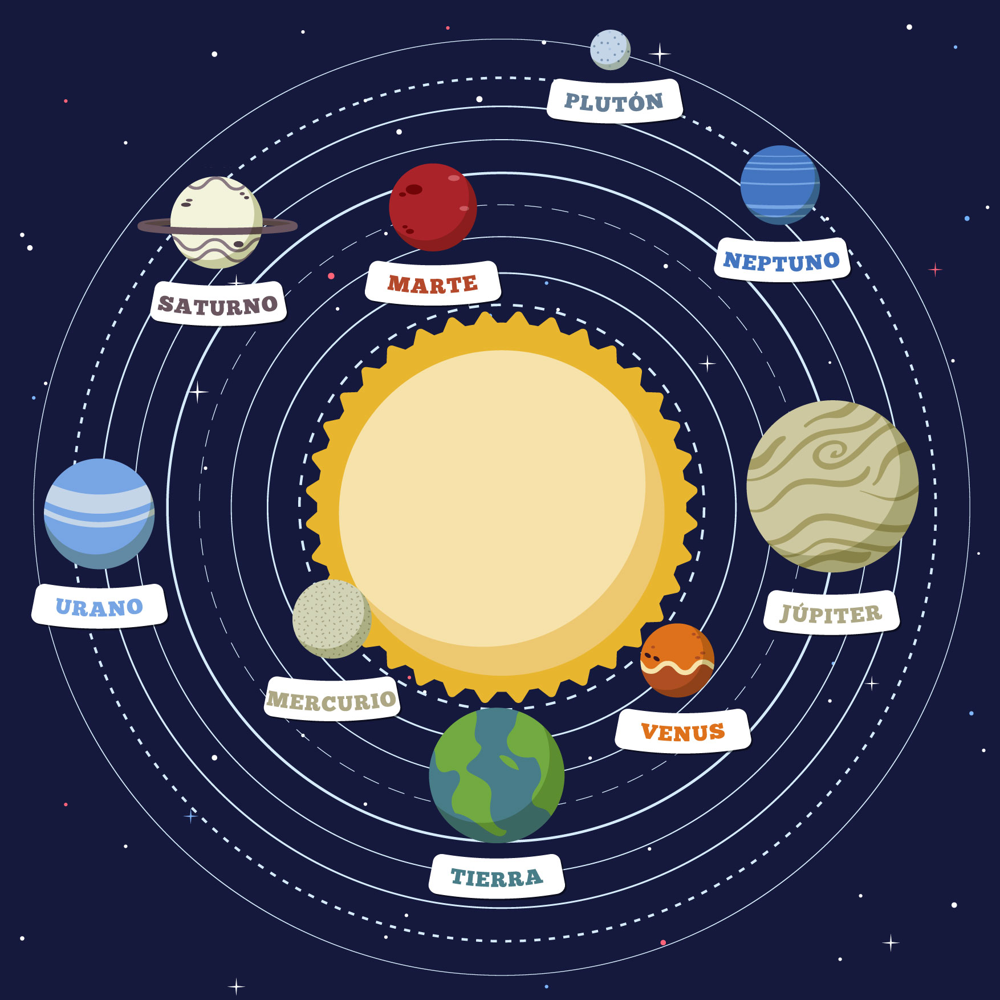

Rompecabezas Espacial
Rol:
Desarrolladora
Fecha:
Octubre 2017
Cliente:
Universidad Jorge Tadeo Lozano - Tecnología III
Resumen
Aprendiendo a Cocinar es una experiencia de realidad mixta, donde la realidad aumentada, la realidad virtual y el internet de las cosas conviven en un solo lugar para crearle una experiencia inolvidable al usuario. Esta experiencia tiene el objetivo de ayudarle a las personas que no saben cocinar a aprender ciertas habilidades en la cocina, sin la necesidad de desperdiciar comida, sin cortes innecesarios en las manos, ni generar grandes desastres dentro de la cocina.
Target
ROMPECABEZAS ESPACIAL

Desarrollo, tercera fase
La tercera fase fue comenzar a añadirle texturas, el sistema de partículas para las estrellas, realizar la animación del movimiento de los planetas y comenzar a desplegar las funcionalidades realizadas en la etapa anterior a los otros elementos que lo requerían.
herramientas
Unity
Vuforia
Illustrator

Lenguajes
C#